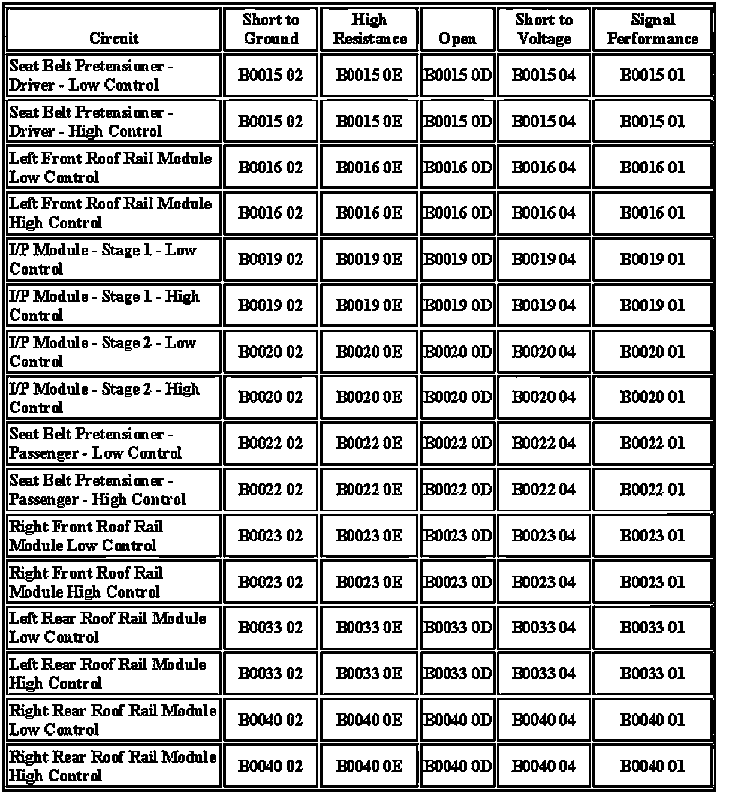

B0033
DTC B0014-B0045
Diagnostic Instructions
- Perform the Diagnostic System Check - Vehicle prior to using this diagnostic procedure.
- Review Strategy Based Diagnosis for an overview of the diagnostic approach.
- Diagnostic Procedure Instructions provides an overview of each diagnostic category.
DTC Descriptors
B0015 01: Driver Pretensioner Deployment Loop Short to Battery
B0015 02: Driver Pretensioner Deployment Loop Short to Ground
B0015 04: Driver Pretensioner Deployment Loop Open Circuit
B0015 0D: Driver Pretensioner Deployment Loop Resistance Above Threshold
B0015 0E: Driver Pretensioner Deployment Loop Resistance Below Threshold
B0016 01: Left Roof Rail Initiator 1 Deployment Loop Short to Battery
B0016 02: Left Roof Rail Initiator 1 Deployment Loop Short to Ground
B0016 04: Left Roof Rail Initiator 1 Deployment Loop Open Circuit
B0016 0D: Left Roof Rail Initiator 1 Deployment Loop Resistance Above Threshold
B0016 0E: Left Roof Rail Initiator 1 Deployment Loop Resistance Below Threshold
B0019 01: Passenger Frontal Deployment Loop Stage 1 Short to Battery
B0019 02: Passenger Frontal Deployment Loop Stage 1 Short to Ground
B0019 04: Passenger Frontal Deployment Loop Stage 1 Open Circuit
B0019 0D: Passenger Frontal Deployment Loop Stage 1 Resistance Above Threshold
B0019 0E: Passenger Frontal Deployment Loop Stage 1 Resistance Below Threshold
B0020 01: Passenger Frontal Deployment Loop Stage 2 Short to Battery
B0020 02: Passenger Frontal Deployment Loop Stage 2 Short to Ground
B0020 04: Passenger Frontal Deployment Loop Stage 2 Open Circuit
B0020 0D: Passenger Frontal Deployment Loop Stage 2 Resistance Above Threshold
B0020 0E: Passenger Frontal Deployment Loop Stage 2 Resistance Below Threshold
B0022 01: Passenger Pretensioner Deployment Loop Short to Battery
B0022 02: Passenger Pretensioner Deployment Loop Short to Ground
B0022 04: Passenger Pretensioner Deployment Loop Open Circuit
B0022 0D: Passenger Pretensioner Deployment Loop Resistance Above Threshold
B0022 0E: Passenger Pretensioner Deployment Loop Resistance Below Threshold
B0023 01: Right Roof Rail Initiator 1 Deployment Loop Short to Battery
B0023 02: Right Roof Rail Initiator 1 Deployment Loop Short to Ground
B0023 04: Right Roof Rail Initiator 1 Deployment Loop Open Circuit
B0023 0D: Right Roof Rail Initiator 1 Deployment Loop Resistance Above Threshold
B0023 0E: Right Roof Rail Initiator 1 Deployment Loop Resistance Below Threshold
B0033 01: Third Row Left Roof Rail Deployment Loop Short to Battery
B0033 02: Third Row Left Roof Rail Deployment Loop Short to Ground
B0033 04: Third Row Left Roof Rail Deployment Loop Open Circuit
B0033 0D: Third Row Left Roof Rail Deployment Loop Resistance Above Threshold
B0033 0E: Third Row Left Roof Rail Deployment Loop Resistance Below Threshold
B0040 01: Third Row Right Roof Rail Deployment Loop Short to Battery
B0040 02: Third Row Right Roof Rail Deployment Loop Short to Ground
B0040 04: Third Row Right Roof Rail Deployment Loop Open Circuit
B0040 0D: Third Row Right Roof Rail Deployment Loop Resistance Above Threshold
B0040 0E: Third Row Right Roof Rail Deployment Loop Resistance Below Threshold
Diagnostic Fault Information

Circuit/System Description
During a side or frontal crash of sufficient force the inflatable restraint sensing and diagnostic module (SDM) will allow current to flow through the deployment loop in order to deploy the air bag module. There are 2 shorting bars used within the module connector which will short together both high and low circuits, when the connector is disconnected. This will prevent unwanted deployment of the inflator module during servicing.
Conditions for Running the DTC
Ignition voltage is between 9-16 V.
Conditions for Setting the DTC
B0015 01, B0016 01, B0019 01, B0020 01, B0022 01, B0023 01, B0033 01, B0040 01
The inflatable restraint module or pretensioner high and/or low circuit is short to voltage for 120 milliseconds.
B0015 02, B0016 02, B0019 02, B0020 02, B0022 02, B0023 02, B0033 02, B0040 02
The inflatable restraint module or pretensioner high and/or low circuit is short to ground for 120 milliseconds.
B0015 04, B0016 04, B0019 04, B0020 04, B0022 04, B0023 04, B0033 04, B0040 04
The inflatable restraint module or pretensioner high and/or low circuit is open for 120 milliseconds.
B0015 0D, B0016 0D, B0019 0D, B0020 0D, B0022 0D, B0023 0D, B0033 0D, B0040 0D
The inflatable restraint module or pretensioner deployment loop resistance is more than 3.9 for 120 milliseconds.
B0015 0E, B0016 0E, B0019 0E, B0020 0E, B0022 0E, B0023 0E, B0033 0E, B0040 0E
The inflatable restraint module or pretensioner deployment loop resistance is less than 1.1 for 120 milliseconds.
Action Take When the DTC Sets
- The SDM commands the AIR BAG indicator ON via serial data communications.
- The SDM will store a DTC, if event occurs system will still attempt deployments.
Conditions for Clearing the DTC
- The condition responsible for setting the DTC no longer exists.
- A history DTC will clear once 100 fault-free ignition cycles have occurred.
Diagnostic Aids
When a harness connector is disconnected, the high control and low control circuits are shorted together by the integral shorting bar. This should be taken into account when testing for faults on these circuits.
Circuit/System Testing
Note: When removing connectors inspect for damage or corrosion. Damage or corrosion in the following requires repair or replacement of the affected component/connector.
- The pretensioner
- The air bag module
- The SDM module
- The air bag wiring harness connector
- The SDM wiring harness connector
1. Ignition OFF, disconnect the harness connector at the appropriate pretensioner or inflatable restraint module.
2. Install a 3 A fused jumper between the J 38715-A and the connector of the pretensioner or inflatable restraint module.
3. Ignition ON, verify the DTC is set as current.
- If DTC is not set or is set as history, replace the appropriate inflatable restraint module.
4. Ignition OFF, disconnect J 38715-A and the jumper
5. Disconnect the harness connector at the SDM.
6. Ignition ON, test for less than 1 V between the appropriate high control circuit terminal and ground.
- /P Module - Stage 1 terminal A1
- /P Module - Stage 2 terminal B1
- Left Front Roof Rail Module terminal B
- Right Front Roof Rail Module terminal B
- Left Rear Roof Rail Module terminal 2
- Right Rear Roof Rail Module terminal 2
- Seat Belt Pretensioner - Left terminal B
- Seat Belt Pretensioner - Right terminal B
- If greater than the specified range, test the circuit for a short to voltage. If the circuit tests normal, replace the SDM.
7. Test for less than 1 V between the appropriate low control circuit terminal and ground.
- /P Module - Stage 1 terminal A2
- I/P Module - Stage 2 terminal B2
- Left Front Roof Rail Module terminal A
- Right Front Roof Rail Module terminal A
- Left Rear Roof Rail Module terminal 1
- Right Rear Roof Rail Module terminal 1
- Seat Belt Pretensioner - Left terminal A
- Seat Belt Pretensioner - Right terminal A
- If greater than the specified range, test the circuit for a short to voltage. If the circuit tests normal, replace the SDM.
8. Ignition OFF, test for infinite resistance between the appropriate high control circuit terminal and ground.
- I/P Module - Stage 1 terminal A1
- I/P Module - Stage 2 terminal B1
- Left Front Roof Rail Module terminal B
- Right Front Roof Rail Module terminal B
- Left Rear Roof Rail Module terminal 2
- Right Rear Roof Rail Module terminal 2
- Seat Belt Pretensioner - Left terminal B
- Seat Belt Pretensioner - Right terminal B
- If not within the specified value, test the circuit for a short to ground. If the circuit tests normal, replace the SDM.
9. Test for infinite resistance between the appropriate low control circuit terminal and ground.
- I/P Module - Stage 1 terminal A2
- /P Module - Stage 2 terminal B2
- Left Front Roof Rail Module terminal A
- Right Front Roof Rail Module terminal A
- Left Rear Roof Rail Module terminal 1
- Right Rear Roof Rail Module terminal 1
- Seat Belt Pretensioner - Left terminal A
- Seat Belt Pretensioner - Right terminal A
- If not within the specified value, test the circuit for a short to ground. If the circuit tests normal, replace the SDM.
10. Test for less then 1 between the following high control circuit terminals.
- I/P Module - Stage 1 terminal A1 and SDM terminal 10
- I/P Module - Stage 2 terminal B1 and SDM terminal 6
- Left Front Roof Rail Module terminal B and SDM terminal 13
- Right Front Roof Rail Module terminal B and SDM terminal 14
- Left Rear Roof Rail Module terminal 2 and SDM terminal 21
- Right Rear Roof Rail Module terminal 2 and SDM terminal 22
- Seat Belt Pretensioner - Left terminal B and SDM terminal 16
- Seat Belt Pretensioner - Right terminal B and SDM terminal 19
- If not within the specified range, test the circuit for an open/high resistance.
11. Test for less then 1 between the following low control circuit terminals.
- I/P Module - Stage 1 terminal A2 and SDM terminal 11
- I/P Module - Stage 2 terminal B2 and SDM terminal 7
- Left Front Roof Rail Module terminal A and SDM terminal 12
- Right Front Roof Rail Module terminal A and SDM terminal 15
- Left Rear Roof Rail Module terminal 1 and SDM terminal 20
- Right Rear Roof Rail Module terminal 1 and SDM terminal 23
- Seat Belt Pretensioner - Left terminal A and SDM terminal 17
- Seat Belt Pretensioner - Right terminal A and SDM terminal 18
- If not within the specified range, test the circuit for an open/high resistance.
12. If all circuits test normal, replace the appropriate inflatable restraint or pretensioner.
Repair Instructions
Perform the Diagnostic Repair Verification after completing the diagnostic procedure.
- SIR/SRS Wiring Repairs
- Instrument Panel Inflatable Restraint Module Replacement
- Steering Wheel Inflatable Restraint Module Replacement
- Steering Wheel Inflatable Restraint Module Coil Replacement
- Inflatable Restraint Side Impact Sensor Replacement
- Roof Side Rail Inflatable Restraint Module Replacement
- Seat Belt Retractor Pretensioner Replacement - Front
- Control Module References for SDM replacement, programming, and setup